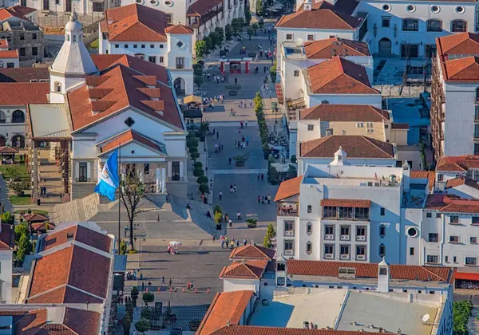
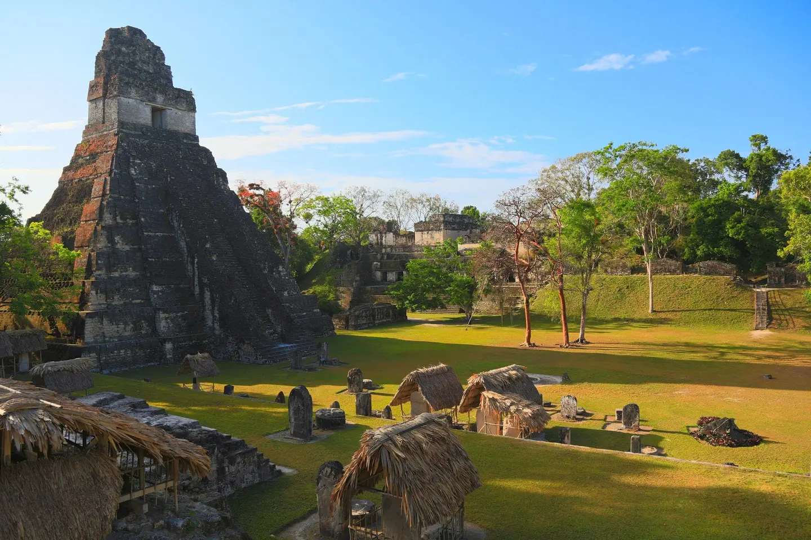
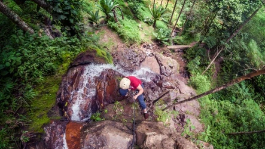

Demographics
Population: 17,608,483
People Ages 18-65: 54.1%
Median Gross Rent: $500
Median Household income: $12,500
What Makes Guatemala Stand Out?
1. Business-Friendly Environment
Guatemala offers a highly favorable environment for businesses, driven by its strategic location in Central America, which serves as a gateway between North and South America. The country boasts a diverse and dynamic economy with sectors ranging from agriculture and manufacturing to tourism and services. Guatemala's government has implemented various policies and incentives to attract foreign investment, including tax breaks, simplified business registration processes, and free trade agreements with key global markets. Additionally, the nation’s young and growing population provides a vibrant and skilled labor force, further enhancing its appeal to entrepreneurs and multinational corporations. The combination of competitive operational costs, modern infrastructure, and a commitment to economic reforms makes Guatemala an attractive destination for business growth and investment.
2. Energy Hub
Guatemala is becoming an important energy hub in Central America due to its abundant natural resources and investments in energy infrastructure. The country has focused on expanding its renewable energy sources, including hydroelectric, geothermal, and solar power. Hydroelectric power is especially significant, providing a large portion of Guatemala’s electricity. Additionally, Guatemala is a key location for regional energy distribution, connecting power grids and enabling energy trade. The government's efforts to modernize the energy sector and promote sustainability make Guatemala an attractive destination for energy investments.
3. Quality of Life
Guatemala offers a high quality of life with its rich cultural heritage, beautiful landscapes, and warm climate. The country is known for its friendly people, vibrant traditions, and delicious cuisine. With affordable living costs, residents enjoy a good standard of living. Access to healthcare and education is improving, and the growing economy provides new opportunities for work and business. From its historic cities to stunning natural attractions, Guatemala is a wonderful place to live and explore.
4. Talented Workforce
Guatemala boasts a talented and diverse workforce, contributing to the country's economic growth and development. With a young and dynamic population, there is a strong emphasis on education and skill development. The country has numerous universities and technical institutes that produce skilled graduates in various fields, from engineering and technology to business and healthcare. Additionally, Guatemala's multilingual population, including proficiency in Spanish and English, makes it an attractive destination for international businesses. This skilled and adaptable workforce is a key asset for companies looking to invest and grow in the region.
5. Infrastructure and Connectivity
Guatemala has been steadily improving its infrastructure and connectivity, making it easier for businesses and individuals to thrive. The country boasts a network of modern highways and roads that connect major cities and regions, facilitating efficient transportation of goods and people. Additionally, Guatemala's main international airport in Guatemala City provides direct flights to various global destinations, enhancing international trade and tourism. Investments in telecommunications have also boosted internet access and mobile connectivity across the country. These developments in infrastructure and connectivity play a crucial role in supporting economic growth and attracting foreign investment.
Booming Economy
Beautiful Infrastructure
Wonderful places
Events going on every day!
Hustle and Bustle of City Life